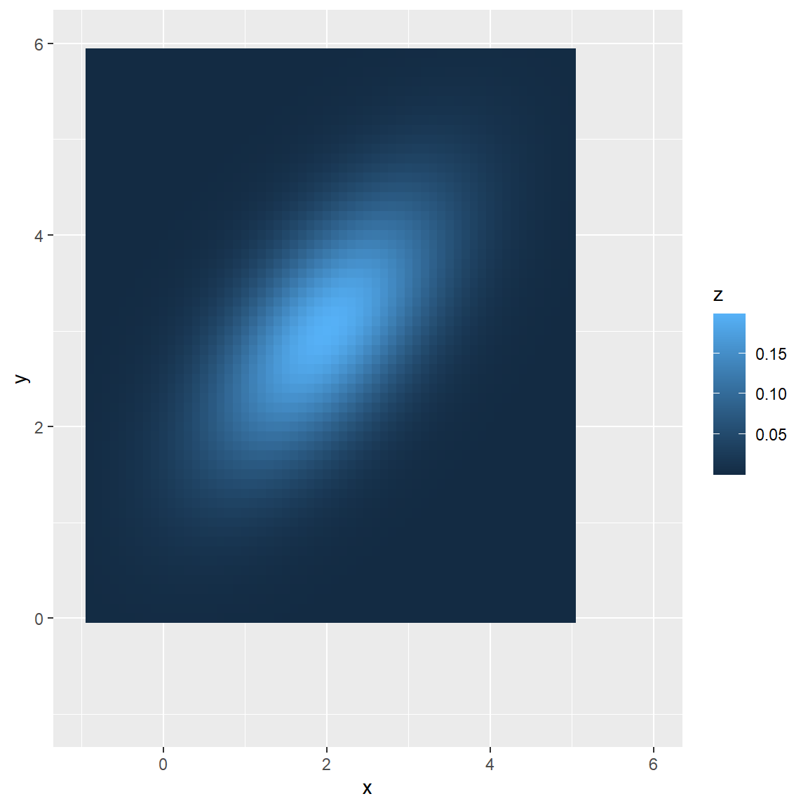
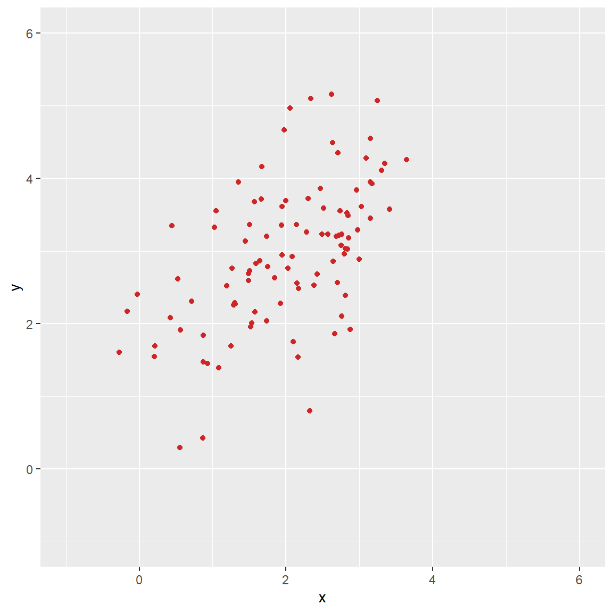
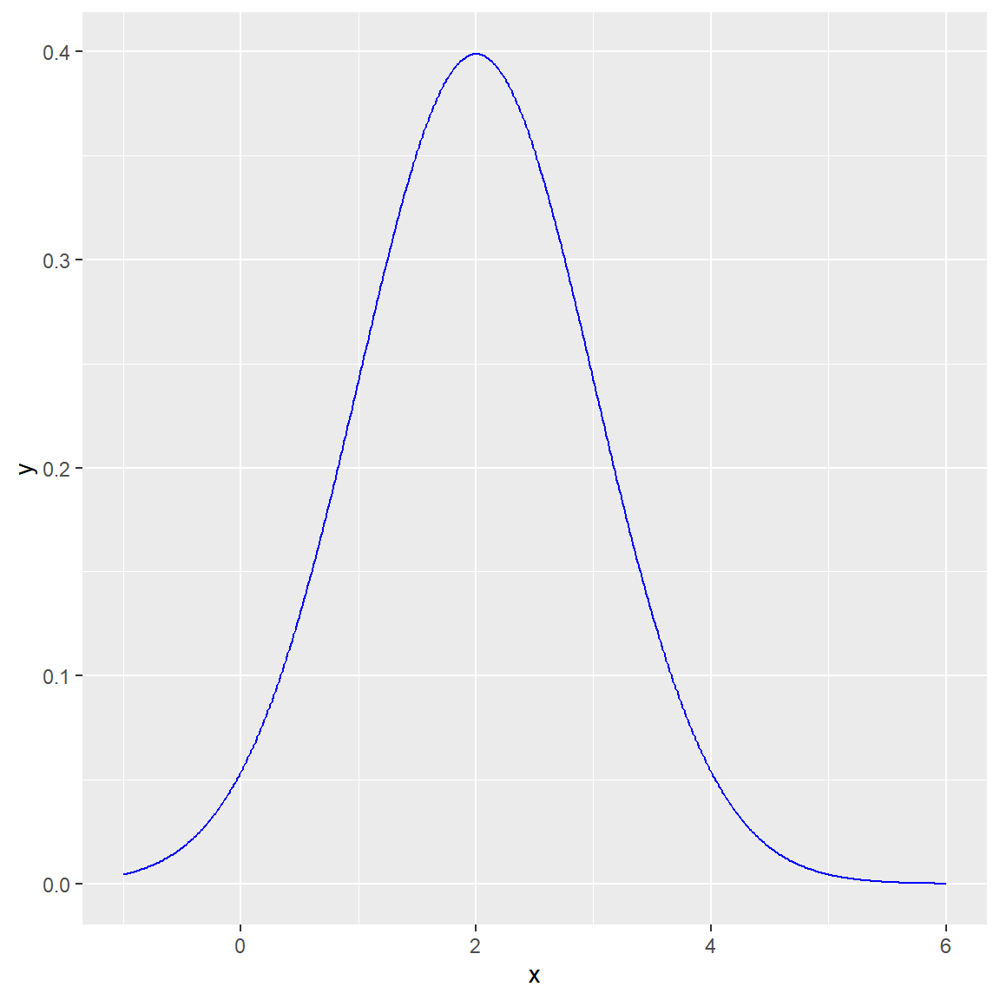
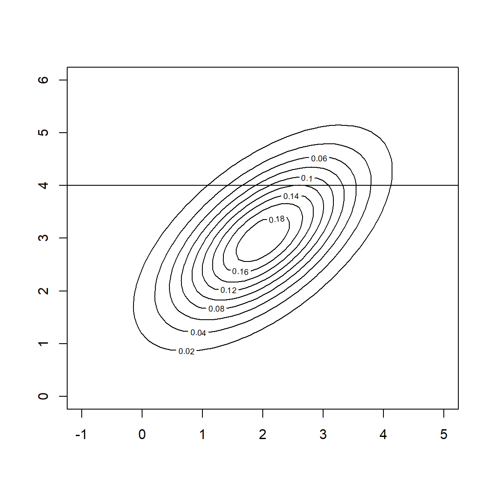

36-350 – Statistical Computing
Week 9 – Spring 2022
The multivariate normal distribution is the generalization of the normal distribution to multiple dimensions. The joint probability density function or pdf is \[ f(x) = \frac{1}{\sqrt{(2\pi)^d \vert \Sigma \vert}} \exp\left(-\frac12 (x-\mu)^T \Sigma^{-1} (x-\mu)\right) \,, \] where \(x = \{x_1,\ldots,x_d\}\) is a coordinate in \(d\)-dimensional Euclidean space, \(\mu = \{\mu_1,\ldots,\mu_d\}\) is the coordinate of the centroid of the distribution, \(\Sigma\) is the covariance matrix \[ \Sigma = \left( \begin{array}{cccc} \sigma_1^2 & \rho_{12}\sigma_1\sigma_2 & \cdots & \rho_{1d}\sigma_1\sigma_d \\ \rho_{21}\sigma_2\sigma_1 & \sigma_2^2 & \cdots & \rho_{2d}\sigma_2\sigma_d \\ \vdots & \vdots & \ddots & \vdots \\ \rho_{d1} \sigma_d\sigma_1 & \rho_{d2}\sigma_d\sigma_2 & \cdots & \sigma_d^2 \end{array} \right) \,, \] and \(\vert \Sigma \vert\) is the determinant of the covariance matrix. \(\rho_{ij}\) is the correlation coefficient between variable \(i\) and variable \(j\): remember from 225 that the allowed values range from \(-1\) (complete negative correlation) to \(+1\) (complete positive correlation).
On the next slide, we show a heatmap of a bivariate normal with centroid \(\mu_1 = 2\) and \(\mu_2 = 3\), standard deviation \(\sigma_1 = \sigma_2 = 1\), and correlation coefficient \(\rho = 0.6\). (Beware that I have yet to discover one package which does everything I want with a multivariate normal; for plotting the density, we’re using emdbook.)
x = seq(-1,5,by=0.1)
y = seq(0,6,by=0.1)
x.matrix = as.matrix(expand.grid(x,y))
mu = c(2,3)
sigma.1 = 1
sigma.2 = 1
rho.12 = 0.6
Sigma = matrix(c(sigma.1^2,rho.12*sigma.1*sigma.2,rho.12*sigma.1*sigma.2,sigma.2^2),nrow=2)
Sigma## [,1] [,2]
## [1,] 1.0 0.6
## [2,] 0.6 1.0if ( require(emdbook) == FALSE ) {
install.packages("emdbook",repos="https://cloud.r-project.org")
library(emdbook)
}## Loading required package: emdbook## Warning: package 'emdbook' was built under R version 4.1.3fx = dmvnorm(x.matrix,mu,Sigma)
df.dist = data.frame(x=x.matrix[,1],y=x.matrix[,2],z=fx)
ggplot(data=df.dist,mapping=aes(x=x,y=y,fill=z)) + geom_tile() + xlim(-1,6) + ylim(-1,6)
Here we show how to sample 100 data from the same multivariate normal plotted above, using mvrnorm() in MASS.
suppressMessages(library(MASS))
mu = c(2,3)
sigma.1 = 1
sigma.2 = 1
rho.12 = 0.6
Sigma = matrix(c(sigma.1^2,rho.12*sigma.1*sigma.2,rho.12*sigma.1*sigma.2,sigma.2^2),nrow=2)
Sigma## [,1] [,2]
## [1,] 1.0 0.6
## [2,] 0.6 1.0set.seed(101)
data = mvrnorm(100,mu,Sigma)
df = data.frame(x=data[,1],y=data[,2])
ggplot(data=df,mapping=aes(x=x,y=y)) + geom_point(col="firebrick3") + xlim(-1,6) + ylim(-1,6)
To compute the sample covariance matrix for a data frame, use cov() or var():
## x y
## x 0.8187645 0.4963184
## y 0.4963184 0.9805621Note that, e.g., the off-diagonal element is not 0.6: the elements of a sample covariance matrix are random variables.
To compute the sample correlation matrix:
## x y
## x 1.0000000 0.5539153
## y 0.5539153 1.0000000The marginal distribution for a multivariate normal is simple to calculate.
(What is the meaning of a marginal distribution? It shows how the data are distributed along a particular axis [or set of axes] while ignoring how they are distributed along any other axes. In the plot on the next slide, we show how the data are distributed along the \(x\) axis, without regard to how they are actually distributed on the \((x,y)\) plane…by computing a marginal, we in essence are saying that we don’t care how the data are distributed along the \(y\) axis anymore…)
Assume that dimensionality of the marginal is \(k\), and we are keeping the dimensions \(\{p_1,\ldots,p_k\}\). (For instance, perhaps \(d = 5\), \(p = 2\), and \(\{p_1,p_2\} = \{2,3\}\), i.e., we are integrating over the first, fourth, and fifth axes so as to compute the marginal density \(f_{2,3}(x_2,x_3)\).) We simply keep the elements of \(\{p_1,\ldots,p_k\}\) of \(\mu\) and rows \(\{p_1,\ldots,p_k\}\) and columns \(\{p_1,\ldots,p_k\}\) of \(\Sigma\). (And change \(d\) to \(k\).) Done.
## [1] 2## [1] 1# p is one-dimensional: use dnorm() to compute marginal pdf
x = seq(-1,6,by=0.01)
fx = dnorm(x,mean=mu.marginal,sd=sqrt(Sigma.marginal))
ggplot(data=data.frame(x=x,y=fx),mapping=aes(x=x,y=y)) + geom_line(col="blue")
Computing a conditional distribution for the multivariate normal is a tad more complicated than computing a marginal distribution.
What is the meaning of a conditional distribution? It shows how the data are distributed along a particular axis [or set of axes] given conditions that are specified for any other axes. Below we display a bivariate normal and draw a line across it that represents the condition \(y=4\). The conditional distribution for the data along the \(x\) axis, given that \(y=4\), is a univariate normal defined along the line (and pointing out of the slide). Applying the condition means that the expected value along the \(x\) axis is no longer 2, but roughly 2.6…and the width of the distribution changes as well.

Assume we break up the data vector \(x\) into two vectors \(x_k\) and \(x_{d-k}\). (For instance, if we have a five-dimensional multivariate normal, perhaps \(x_k\) comprises data for the first, third, and fifth coordinates, while \(x_{d-k}\) comprises the second and fourth coordinates.) Similarly, we break up \(\mu\) (straightforward) and break up \(\Sigma\) (less straightforward): \[ \Sigma = \left( \begin{array}{cc} \Sigma_{k,k} & \Sigma_{k,d-k} \\ \Sigma_{d-k,k} & \Sigma_{d-k,d-k} \end{array} \right) \,, \] where, e.g., \(\Sigma_{k,k}\) is the reduced matrix in which we keep the \(k\) rows and \(k\) columns associated with data vector \(x_k\), \(\Sigma_{d-k,k}\) is the reduced matrix in which we keep the \(d-k\) rows associated with \(x_{d-k}\) and the \(k\) columns associated with the data vector \(x_k\), etc.
Having done this, the distribution of \(x_k\) conditional on \(x_{d-k} = c\) (where \(c\) is a vector of constants of length \(d-k\)) has mean \[ \mu_{\rm cond} = \mu_k + \Sigma_{k,d-k} \Sigma_{d-k,d-k}^{-1} (c - \mu_{d-k}) \] and covariance matrix \[ \Sigma_{\rm cond} = \Sigma_{k,k} - \Sigma_{k,d-k} \Sigma_{d-k,d-k}^{-1} \Sigma_{d-k,k} \,. \]
Below we define a four-dimensional multivariate normal, then compute the centroid and covariance matrix for \(x_1\) and \(x_2\) given values of \(x_3\) and \(x_4\):
mu = c(1,2,3,4)
sigma = c(1,2,1,2)
rho = matrix(c(1,0.3,0.5,0.7,0.3,1,0.4,0.6,0.5,0.4,1,0.5,0.7,0.6,0.5,1),4,4)
Sigma = rho * (sigma %o% sigma) # outer product of sigma with itself
Sigma## [,1] [,2] [,3] [,4]
## [1,] 1.0 0.6 0.5 1.4
## [2,] 0.6 4.0 0.8 2.4
## [3,] 0.5 0.8 1.0 1.0
## [4,] 1.4 2.4 1.0 4.0k = c(1,2)
d.minus.k = c(3,4)
x.3 = 2 # condition: x_3 = 2
x.4 = 3 # condition: x_4 = 3
Sigma.kk = Sigma[k,k]
Sigma.kd = Sigma[k,d.minus.k]
Sigma.dk = Sigma[d.minus.k,k]
Sigma.dd = Sigma[d.minus.k,d.minus.k]
mu.cond = mu[k] + Sigma.kd %*% solve(Sigma.dd) %*% matrix(c(x.3,x.4)-mu[d.minus.k],nrow=2)
mu.cond # centroids along axis 1 and 2 (originally 1 and 2)## [,1]
## [1,] 0.5
## [2,] 1.2Sigma.cond = Sigma.kk - Sigma.kd %*% solve(Sigma.dd) %*% Sigma.dk
Sigma.cond # covariance matrix for axes 1 and 2## [,1] [,2]
## [1,] 0.48 -0.280000
## [2,] -0.28 2.506667At this point you have a whole new (multivariate) normal defined with \(\mu = \mu_{\rm cond}\) and \(\Sigma = \Sigma_{\rm cond}\). You can visualize it, sample from it, etc., just like any other (multivariate) normal.
NOTE: the video for this set of notes showed a different covariance matrix that “didn’t work” optimally since the conditional covariance matrix had negative entries on the diagonals, i.e., the variances along each axis were negative. This demonstrates that you cannot just pick any numbers for the correlations between axis pairs; some choices lead to inconsistencies in the multi-dimensional space (i.e., lead to multivariate normals that actually cannot exist).